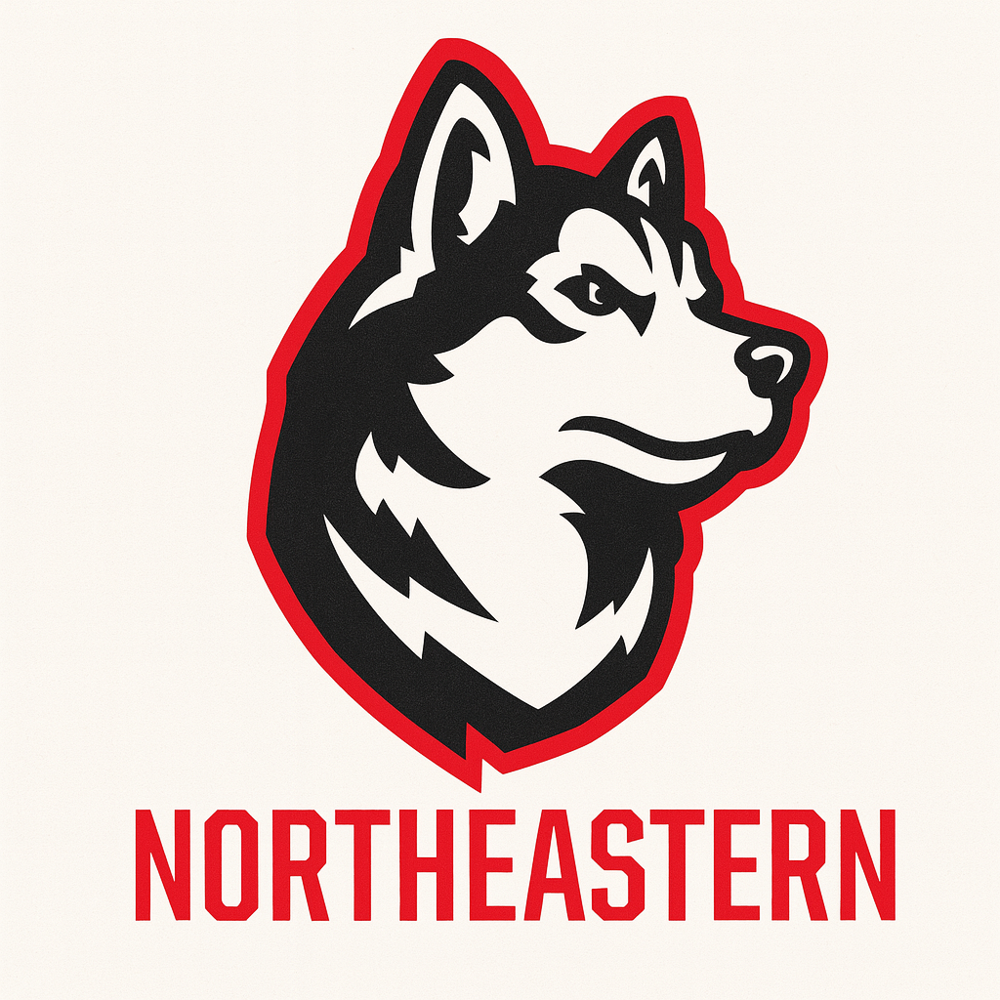

Analyst, Supply Chain
Rebecca Everlene Co | Feb 2025 – Present
• Created automated Tableau tools to track demand forecast deviations over an 18-month horizon. • Built a live Material Readiness dashboard using SAP data to monitor inventory, order status, and shelf life. • Supported monthly S&OP processes by aligning RCCP output with manufacturing constraints and subcontractor capacity. • Identified and resolved phantom inventory issues by comparing MES and GSAP data, improving inventory accuracy. • Led short-term planning during facility downtimes and helped streamline SOPs and master data setup (BOMs, Recipes, Work Centers).
Skills: Worked on planning for clinical trial, commercial, and new product introductions.
• Standardized material naming across 25+ global projects to improve MRP and data visibility. • Conducted SLOB analysis using SAP to free up warehouse space and streamline excess stock. • Managed weekly inventory projections and triggered purchase orders based on MRP alignment with BOMs and MPS.
Skills: Focused on improving raw material planning and reducing inventory waste.
• Built a demand model using historical data and what-if scenarios to improve forecast reliability. • Automated reorder point calculations using Excel to support 250+ SKUs. • Led lean initiatives like process mapping, time studies, and 5S to reduce material movement inefficiencies.
Skills: Hands-on exposure to demand planning and lean tools.
